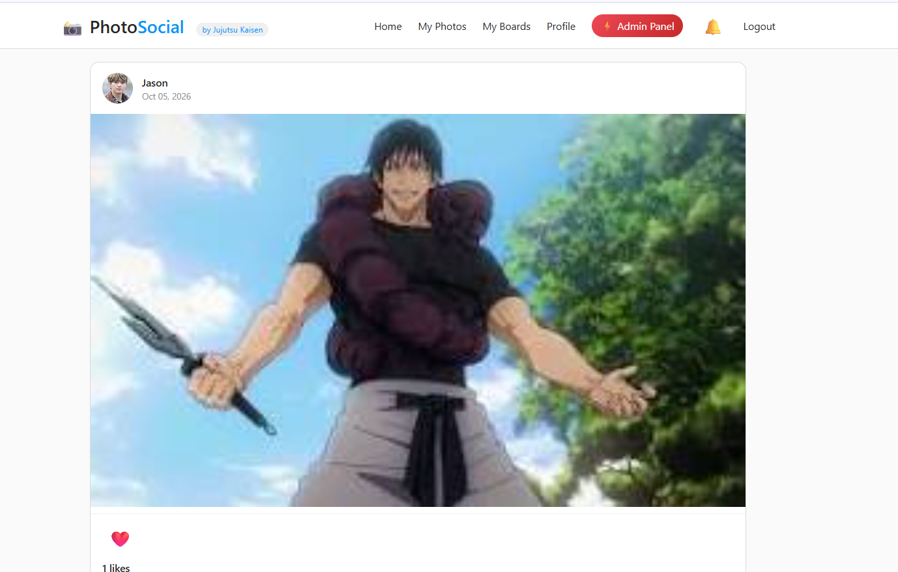
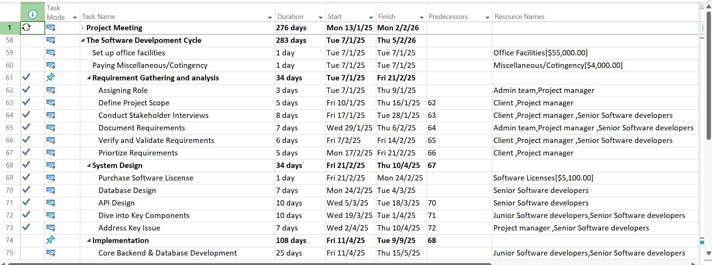
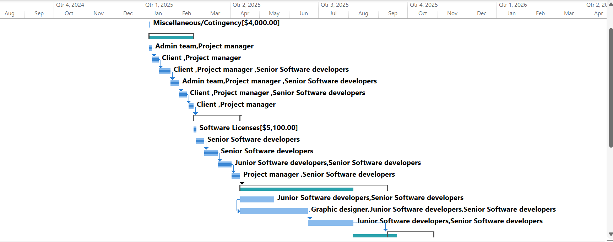

Microsoft Excel
In microsoft Excel, I used to do Basic formulas, sorting, filtering and charts for data analysis.
AmateurIT and business Graduate | Aspiring Data Analyst
I am an IT and business graduate soon and developing my skills in Excel, SQL and Python to explore data, identify the trend patterns and support better decisions in the workplace enviroment.
Get to know me
I am IT and business graduate in 2027 interested in data analysis, database management and solving problems. I am building variety of practical experience by learning how to organize data, write SQL queries, use spreadsheets and create simple Python programs.
My own personal goal is to start my career as a Data Analyst, continue learning industry tools and turn raw information into useful findings to achieve a better way in future.
What I am learning
In microsoft Excel, I used to do Basic formulas, sorting, filtering and charts for data analysis.
AmateurIn SQL, I used to do basic queries using SELECT, WHERE and ORDER BY to develop a database managemnent .
AmateurProgramming fundamentals and simple data tasks.
AmateurA tool that I able to learn schedule core, reallocate resource and the workflow through the microsoft project.
BasicMy practical work


Developed a photo-sharing website application that allows users to browse photos, upload images to their accounts, edit photo details, and delete their own posts. The application provides an interactive interface for managing photo content.
SQL (main) · Data Analysis · Charts


Developed project management skills through coursework involving project planning, scheduling, resource allocation, and progress monitoring. Used Microsoft Project to create Gantt charts, organize project tasks, establish task dependencies, and track project milestones.
SQL · Database Design . Project Management . Gannt Chart (Microsoft Project)
My background
YPC Internaational College
Year 2023- Present
Relevant subjects: Data Analysis, Database Management, Programming, Web Development and Networking.
My journey
Duration: 2024 – 2026
Working in a japanese restaurant taught me the importance of teamwork and communication between colleagues. I handled customer enquiries, managed multiple orders at once which able to multitask different mission at once.
Although this role is not directly in data analysis, it strengthened my attention to detail, time management, and problem-solving skills.
Duration: 2026 - Present
Working in a fast-paced restaurant taught me the importance of accuracy, teamwork, and clear communication. I handled customer enquiries, managed multiple orders at once, and followed strict procedures to maintain quality.
This allows me to be more experience and adapt earlier in the workplace before everything begin.
Self-assessment
Let's connect
I wish this will be the opportumities in entry-level Data Analyst on data analysis and develop my technical skills to perform well in the workplace.
Email: chongjiasheng013@gmail.com
GitHub: github.com/chongjiasheng-ai
College Email: www.ypccollege.edu.my